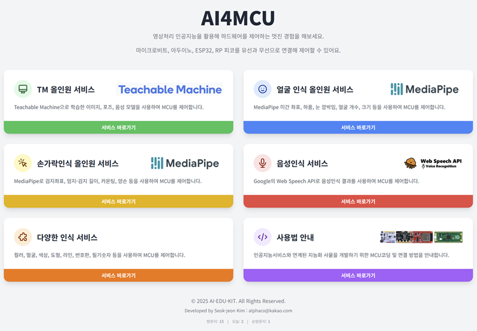

⚙️ AI4MCU 통합 가이드
AI4MCU 서비스와 하드웨어를 연결하는 방법에 대한 통합 매뉴얼입니다.
목차
1. 사이트 접속하기
AI4MCU 서비스는 구글에서 'ai4mcu'로 검색하거나, 주소창에 https://ai4mcu.github.io/를 직접 입력하여 접속할 수 있습니다.
2. 티처블머신 사용법
Google의 Teachable Machine으로 나만의 인공지능 모델을 만들어 하드웨어를 제어할 수 있습니다. 먼저 Teachable Machine 사이트에 접속하여 '이미지', '오디오', '포즈' 프로젝트 중 하나를 선택합니다.

데이터 전송을 위해 클래스 이름을 숫자로 설정하고(예: 1, 2, 3), 웹캠이나 마이크를 이용해 각 클래스에 해당하는 데이터를 수집 후 모델을 학습시킵니다.

학습이 완료되면 '모델 내보내기'를 클릭하여 모델을 업로드하고, 생성된 '공유 가능한 링크'를 복사합니다.

복사한 링크를 AI4MCU의 'TM 올인원 서비스'에 붙여넣고 모델을 로드한 뒤, 인식을 시작하여 사용할 수 있습니다.

3. 티처블머신 연동 아두이노 블록코드 작성하기
티처블머신으로 생성된 모델의 인식 결과를 아두이노에서 받기 위한 mBlock 코드 예시입니다. AI4MCU 서비스는 인식된 클래스 이름(숫자)을 시리얼 통신으로 전송합니다. 아두이노는 이 값을 받아 LCD에 출력하거나 모터를 제어하는 등의 동작을 수행할 수 있습니다.
mBlock 코드: 시리얼 통신 속도를 9600으로 설정하고, 줄바꿈(\\n) 문자가 들어올 때까지 데이터를 읽어 LCD에 표시합니다.

4. 얼굴인식 서비스 사용법
MediaPipe를 이용해 미간 좌표, 하품, 눈 깜박임 등 다양한 얼굴 특징을 데이터로 변환하여 MCU로 전송합니다. '얼굴 인식 올인원 서비스' 페이지에서 '인식 시작'을 누르고 원하는 기능을 탭에서 선택하면 실시간으로 데이터가 출력됩니다.

출력된 데이터는 연결된 하드웨어의 LCD 등을 통해 확인할 수 있습니다.

5. 손가락인식 서비스 사용법
MediaPipe를 이용해 손가락의 다양한 특징을 데이터로 변환합니다. 검지 좌표, 엄지-검지 길이, 손가락 개수 등을 실시간으로 MCU에 전송할 수 있습니다. 사용법은 얼굴 인식 서비스와 유사합니다.


6. 음성인식 서비스 사용법
Web Speech API를 사용하여 음성 명령을 텍스트로 변환하고, 지정된 단어가 포함되어 있을 경우 설정된 값을 MCU로 전송합니다. '음성인식 서비스' 페이지에서 언어를 선택하고, 인식할 단어와 전송할 값을 설정한 후 인식을 시작합니다.


7. 다양한 인식서비스 사용법
'다양한 인식 서비스' 페이지에서는 얼굴 등록을 통한 잠금/해제, 도형 인식, 컬러 인식 등 여러가지 고급 기능을 제공합니다. 얼굴 잠금/해제 기능은 먼저 이름과 전송할 값을 입력하여 자신의 얼굴을 등록해야 합니다. 한 번 등록된 후에는 여러 각도에서 얼굴을 추가로 등록하여 인식률을 높일 수 있습니다.

8. 아두이노 블루투스 연결 코드 작성 방법
아두이노에 블루투스 모듈(JDY-33/HM-10 등)을 연결하여 무선으로 통신하는 방법입니다.
하드웨어 구성: 블루투스 모듈과 LCD를 아두이노 쉴드에 연결합니다.

확장블럭 추가: mBlock5의 확장센터에서 "icec" 또는 "super", "인공지능"으로 검색하고, 슈퍼리치보드 확장블럭을 추가합니다.
mBlock 코드: 소프트웨어 시리얼(블루투스 통신용)을 설정하고, 블루투스로 수신된 데이터를 LCD에 출력하도록 코드를 작성합니다.

PC와 블루투스 장치를 페어링한 후, AI4MCU 서비스에서 해당 COM 포트를 통해 시리얼 연결을 해야 합니다.
9. 마이크로비트 시리얼 연결 코드 작성 방법
마이크로비트를 USB 케이블로 PC에 연결하여 유선으로 데이터를 주고받는 방법입니다.
하드웨어 구성: 마이크로비트 쉴드에 LCD를 연결합니다.

MakeCode 코드: 시리얼 통신 관련 블록과 LCD 확장 블록을 사용하여, 수신된 데이터를 쉼표(,)로 분리하고 각 값을 변수에 저장한 뒤 LCD에 표시합니다.

10. 마이크로비트 블루투스 연결 코드 작성 방법
마이크로비트의 내장 BLE 기능을 사용하여 PC와 무선으로 통신하는 방법입니다.
MakeCode 코드: 'Bluetooth' 확장 블록을 추가하고, '블루투스 UART 서비스 시작' 블록을 사용합니다. 데이터가 수신되었을 때 처리하는 로직은 유선 방식과 동일합니다.

AI4MCU 서비스에서는 '블루투스 연결' 버튼을 눌러 페어링 후 사용합니다.
11. 유튜브 동영상 링크 모음(개발중)
더 자세한 사용법과 예제는 아래 링크의 동영상 매뉴얼을 참고해주세요.
12. 소스코드 및 매뉴얼 다운로드
본 서비스에서 사용되는 모든 서비스의 매뉴얼과 MCU 예제 코드는 아래 구글 드라이브 및 깃허브 링크에서 다운로드할 수 있습니다.
13. 사용자 게시판
서비스 사용 중 궁금한 점이나 개선 아이디어, 버그 리포트가 있다면 자유롭게 의견을 남겨주세요.
🗨️ 토론 카테고리
- • 질문 & 답변 (Q&A)
- • 아이디어 & 제안사항
- • 버그 리포트
- • 사용 후기 & 작품 공유
새 창에서 게시판이 열립니다.